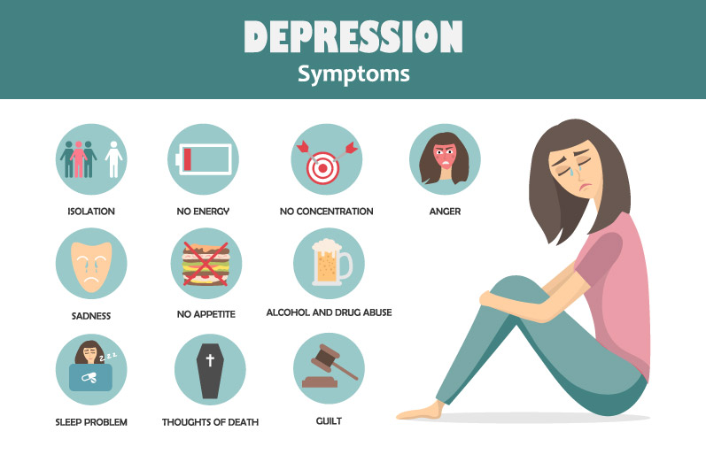

Depression

What is Depression
Depression is a medical condition that affects your mood and ability to function. Depressive symptoms include feeling sad, anxious or hopeless. The condition can also cause difficulty with thinking, memory, eating and sleeping. A diagnosis of major depressive disorder (clinical depression) means you have felt sad, low or worthless most days for at least two weeks while also having other symptoms such as sleep problems, loss of interest in activities, or change in appetite. Without treatment, depression can get worse and last longer. In severe cases, it can lead to self-harm or death. Fortunately, treatments can be very effective in improving symptoms of depression.
how common is depression
Depression is common all over the world. Healthcare providers estimate that nearly 7% of American adults have depression every year. More than 16% of U.S. adults — around 1 in 6 — will experience depression in their lifetime.
What are types of depression
Healthcare providers name depression types according to symptoms and causes. These episodes often have no obvious cause. In some people, they can linger much longer than in others for no clear reason.
Types of depression include:
- • Major depressive disorder (MDD): Major depression (clinical depression) has intense or overwhelming symptoms that last longer than two weeks. These symptoms interfere with everyday life.
- • Bipolar depression: People with bipolar disorder have alternating periods of low mood and extremely high-energy (manic) periods. During the low period, they may have depression symptoms such as feeling sad or hopeless or lacking energy.
- • Perinatal and postpartum depression: “Perinatal” means around birth. Many people refer to this type as postpartum depression. Perinatal depression can occur during pregnancy and up to one year after having a baby. Symptoms go beyond “the baby blues,” which causes minor sadness, worry or stress.
- • Persistent depressive disorder (PDD): PDD is also known as dysthymia. Symptoms of PDD are less severe than major depression. But people experience PDD symptoms for two years or longer.
- • Premenstrual dysphoric disorder (PMDD): Premenstrual dysphoric disorder is a severe form of premenstrual disorder (PMS). It affects women in the days or weeks leading up to their menstrual period.
- • Psychotic depression: People with psychotic depression have severe depressive symptoms and delusions or hallucinations. Delusions are beliefs in things that are not based in reality, while hallucinations involve seeing, hearing, or feeling touched by things that aren’t actually there.
- • Seasonal affective disorder (SAD): Seasonal depression, or seasonal affective disorder, usually starts in late fall and early winter. It often goes away during the spring and summer.
What are the symptoms of depression
Depression can affect your emotions, mind and body. Depression symptoms include:
- • Feeling very sad, hopeless or worried.
- • Not enjoying things that used to give you joy.
- • Being easily irritated or frustrated.
- • Eating too much or too little.
- • Changes in how much you sleep.
- • Having a difficult time concentrating or remembering things.
- • Experiencing physical problems like headache, stomachache or sexual dysfunction.
- • Thinking about hurting or killing yourself.

What causes depression
Various factors can cause depression:
- • Brain chemistry: Abnormalities in brain chemical levels may lead to depression.
- • Genetics: If you have a relative with depression, you may be more likely to become depressed.
- • Life events: Stress, the death of a loved one, upsetting events (trauma), isolation and lack of support can cause depression.
- • Medical conditions: Ongoing physical pain and illnesses can cause depression. People often have depression along with conditions like diabetes, cancer and Parkinson’s disease.
- • Medication: Some medications have depression as a side effect. Recreational drugs and alcohol can also cause depression or make it worse.
- • Personality: People who are easily overwhelmed or have trouble coping may be prone to depression.